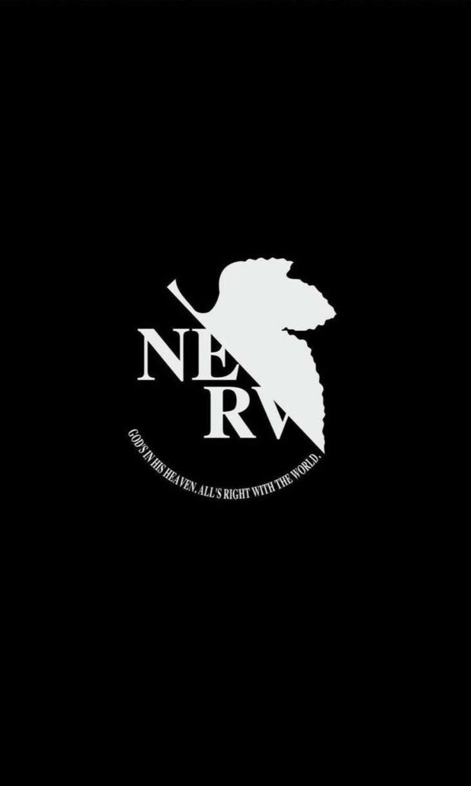

GLITCH NETWORK / BOOT SEQUENCE
INITIALIZING SIGNAL
ESTABLISHING SECURE CONNECTION...

GLITCH
_
SYS_TIME
00:00:00 UTC+03
⚙
SETTINGS
↗
G
GLITCH NETWORK / NODE 77
CONTROL INTERFACE
CONNECTION SECURE
×
WELCOME TO THE SYSTEM
A NEW
SIGNAL
I WILL CONTINUE
///
GLITCH_OS
01 / PERSONAL FILE
IDENTITY
OPEN PROFILE
↗
02 / CREATIVE INDEX
PROJECTS
BROWSE ARCHIVE
↗
03 / OPEN CHANNEL
CONTACT
SEND A SIGNAL
↗
04 / PRIVATE ACCESS
EDIT PROFILE
PASSWORD REQUIRED
↗
05 / OWNER TOOLS
UPLOAD PROJECTS
ADD FILES & IMAGES
↗
SYSTEMS ONLINE